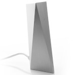
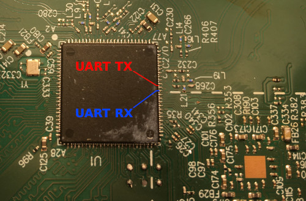
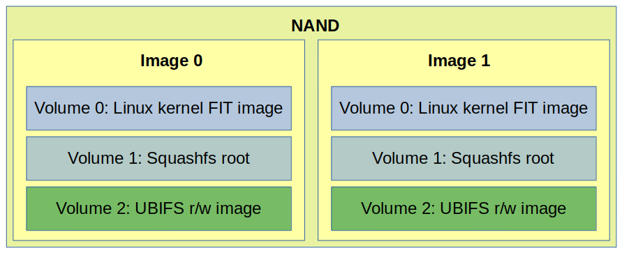
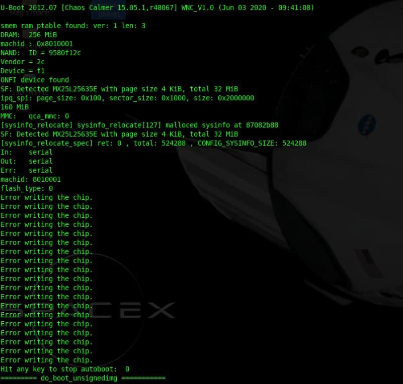
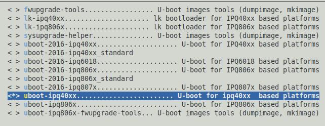
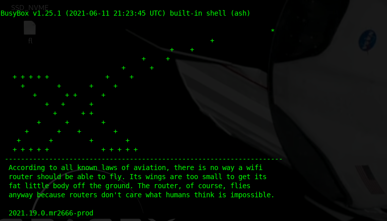
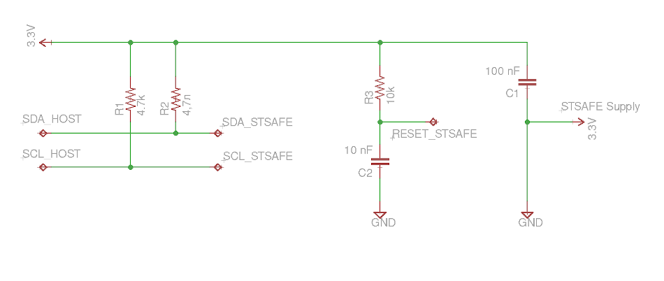

Sure, it might be just a WiFi router, but it was very curious what’s inside. Spoiler: there are some interesting implementation details.
Lucky enough, I found the router on eBay. It’s the first generation of the router. Currently, it’s impossible to buy (separately) the second generation of the router since it was presented a month ago.
Honestly, I love the design of this thing. It reminds me of something from the good old sci-fi.
{kind=link}
The whole device looks rock solid and right-balanced. It’s a shame that this enclosure is not designed to be easily opened. There is no glue, but there are no screws also.
Six hooks hold metal and plastic parts of the router together, three on each side. To open this thing, you need to push the hooks somehow. This damages plastic and even aluminum. But it’s better than nothing, I guess.
{kind=link}
Router internals
The whole metal part of the housing works as a heat sink:
{kind=link}
A relatively simple single board.
{kind=link}
PCB
The heart of the router is a popular Qualcomm IPQ4018 SoC: quad-core ARM Cortex A-7, 802.11ac WiFi 5GHz, and 2.4 GHz support, two channels both. Additionally, this SoC integrates a crypto engine and switch engine with hardware NAT and traffic steering.
Here are all components of the board with a brief description:
{kind=link}
TPS2378 implements IEEE802.3at PoE standard and could handle up to 100V input.
W25N01GV it’s a serial NAND Flash IC. The router operating system is stored on this chip.
Honestly, I’m not impressed by these dual-band antennas. Sure, they can cover a small apartment or a few rooms, but nothing more.
Here is what under the RF cans covers:
{kind=link}
SKY8533-11 and SKY85743-21 are WiFi RF frontends, implementing LNA, PA, and switches.
{kind=link}
The main voltage converter is LM5116. Starlink PoE is 56 volts, but the router could run fine at 24 volts from a network switch.
The Ethernet switch is QCA8072 – dual-port, 10/100/1000 Mbps tri-speed Ethernet PHY. IPQ807x it’s a typical solution for the IPQ40xx platform.
GD25Q128B it’s an SPI NOR flash with Qualcomm bootloader, u-boot, and some additional data.
The most interesting part is the STSAFE-A chip. This special MCU provides secure storage, authentication, and some cryptographic functions, fully supported by the OpenSSL. The MCU is used to store board configuration and certificates. I’ll cover this below.
Recreated router block diagram:
{kind=link}
Unfortunately, I couldn’t trace the UART interface. I know where is the corresponding CPU pins, but it looks like those pins are not used for the serial console. Plus TX pin is almost buried under the CPU, and it’s tough to get to it.
{kind=link}
There are a few test points on the board. Some of them related to the NAND and NOR. Some are voltages control and so on.
I checked all the test pads and got nothing. Anyway, it’s not a big deal.
Firmware
Both NOR and NAND were removed from the board and dumped. All the data below were found with binwalk and hex editor.
It’s not a secret that the router firmware is based on the OpenWRT. Here is the official SpaceX repository: https://github.com/SpaceExplorationTechnologies/starlink-wifi
Sure, the GitHub repository contains only GPL code without any SpaceX proprietary components that drive the router.
Analyzing the dumps, I found that SpaceX is followed a typical QCA pattern, with a few minor differences.
The system starts from a Primary bootloader (PBL) burnt into the SoC. That PBL is looking for a Secondary bootloader (SBL) at zero address of the NOR flash. The SBL initializes the hardware (CPU, DDR) and starts the Main bootloader (u-boot).
The purpose of u-boot is to support system-specific tasks like boot environment, firmware recovery, and operating system boot.
Here is a simplified layout of the Starlink NOR:
| Partition | Offset, bytes | Description |
|---|---|---|
| SBL | 0 | QCA Secondary bootloader |
| MIBIB | 0x40000 | Partition table |
| TZ | 0x60000 | Trust Zone firmware |
| CDT | 0x140000 | Platform memory configuration |
| UENV_0 | 0x180000 | u-boot environment variables 0 |
| UBOOT_0 | 0x190000 | u-boot ELF binary 0 |
| UENV_1 | 0x290000 | u-boot environment variables 1 |
| UBOOT_1 | 0x2D0000 | u-boot ELF binary 1 |
Trust Zone firmware protects the boot process. This means that only a “valid” signed bootloader and Linux kernel are allowed. Each bootloader contains a security certificate. Those certificates could be extracted with a simple dd command. The u-boot certificate, for example:
dd if=GD25Q128B@WSON8.BIN of=cert0.der bs=1 skip=4002248 count=1165
{kind=link}
Also, there are multiple u-boot binaries with separate environments. It could be done for redundancy or different modes. I’m not sure.
The u-boot sources are here: https://github.com/SpaceExplorationTechnologies/starlink-wifi/tree/master/qca/src/uboot-1.0
It seems that the first u-boot uses some default environment. Env variables at offset 0x180000:
baudrate=115200 bootcmd=bootipq bootdelay=2 ipaddr=192.168.1.11 burn-fail=0 burn-in=0 count=0
Also, this bootloader loads the default environment as defined there.
bootcmd=bootipq bootdelay=2 baudrate=115200 ipaddr=192.168.1.11 serial_number=WISNEW-200600011 default_password=Starlink-pass-111 default_ssid=Starlink_00000000 eth_mac_addr=94:10:3E:E9:7F:D5 wps_device_pin=28680758
In contrast, the secondary u-boot contains a Factory configuration at offset 0x290000.
{kind=link}
Additionally, the NOR flash contains WiFi calibration data, a.k.a. “ART” partition. The QCA WiFi driver uses this data; I’m not covering this in the current article.
NAND image
The NAND flash contains the Linux kernel image and rootfs. But it’s somewhat tricky to get a usable image of the NAND.
OOB (Out Of Band) data – it’s a spare area adjacent to a page of data. Generally, OOB exists in NAND Flash to enable ECC (Error Correction Code) and bad block management.
Let’s check the W25N01GV NAND datasheet.
{kind=link}
This means that each 2048 data page contains an additional tail of 64 bytes. Those OOB chunks should be separated from actual data and processed correctly.
Initially, I tried to use this Python script:
import sys
NAND_PAGE_SIZE = 0x800 # 2048 bytes
NAND_PAGE_BLK = 64 # 64 pages per block
NAND_SECTOR_PER_PAGE = 4 # 4 sectors in page
NAND_SECTOR_SIZE = NAND_PAGE_SIZE/NAND_SECTOR_PER_PAGE
OOBLEN = 64
inf = open(sys.argv[1] , "rb")
of = open(sys.argv[2], "wb")
def page2off(pgno):
return pgno * 0x840 # (NAND_PAGE_SIZE + NAND_SECTOR_PER_PAGE*OOBLEN)
def read_page(inf, blkno, pgno):
blklen = page2off(NAND_PAGE_BLK)
fileoff = blklen * blkno + page2off(pgno)
print "reading block %d page %d: offset %08X" % (blkno, pgno, fileoff)
inf.seek(fileoff, 0)
block = inf.read(blklen)
buf = ""
for i in range(NAND_PAGE_SIZE):
buf += block[i]
return s
for blkn in range(1024):
for pagen in range(64):
res = read_page(inf, blkn, pagen)
of.write(res)
Page size, sectors count, and block count were taken from the datasheet.
Run and test result:
$ python oob_strip.py W25N01GV@WSON8.BIN test_nand_out.bin $ file test_out.bin test_out.bin: UBI image, version 1
Alright, we have a UBI. Quite a reasonable solution for the NAND.
Let’s try to analyze and extract this image with a ubi_reader:
$ ubireader_display_info test_out.bin
UBI File
---------------------
Min I/O: 2048
LEB Size: 126976
PEB Size: 131072
Total Block Count: 1024
Data Block Count: 407
Layout Block Count: 4
Internal Volume Block Count: 0
Unknown Block Count: 613
First UBI PEB Number: 0
Image: 1911121817
---------------------
Image Sequence Num: 1911121817
Volume Name:kernel
Volume Name:ubi_rootfs
Volume Name:rootfs_data
PEB Range: 512 - 1023
Volume: kernel
---------------------
Volume: ubi_rootfs
---------------------
Volume: rootfs_data
---------------------
******
Image: 1899964099
---------------------
Image Sequence Num: 1899964099
Volume Name:kernel
Volume Name:ubi_rootfs
Volume Name:rootfs_data
PEB Range: 0 - 511
Volume: kernel
---------------------
Volume: ubi_rootfs
---------------------
Volume: rootfs_data
---------------------
Great result. Here we have two images with three volumes in each image.
Unfortunately, it’s impossible to extract undamaged volume in this way. Typical NAND could always contain some amount of bad sectors or flipped bits. Those errors could be corrected with the OOB, and typically it’s done by the NAND controller.
The proper solution is to use some real hardware NAND controller or nandsim (NAND Flash simulator driver).
My thanks to James Hillard for figuring out the correct params for the nandsim and helping me at this stage.
sudo modprobe nandsim id_bytes=0x98,0xd1,0x90,0x15,0x76,0x14,0x01,0x00 parts=512,512 sudo nandwrite -k -a -o --input-skip=69206016 /dev/mtd1 'W25N01GV@WSON8.BIN' sudo modprobe ubi mtd=/dev/mtd1,2048,0,2 sudo mount -t ubifs /dev/ubi2_2 /mnt/ubi2_2
Now it’s possible to read the data. Thus the simplified NAND layout is:

Two identical images are used for redundancy and easy firmware upgrade procedure.
{kind=link}
Volume 0 contains the Linux kernel FIT image with signature.
Volume 1 it’s a squashfs rootfs image with OpenWRT operating system and SpaceX software.
Volume 2 is quite interesting. It’s an r/w ubifs image with the router configuration files:
nand_extract/ubi2_2 ├── etc │ └── config │ └── WifiConfig ├── upper │ └── etc │ ├── config │ │ ├── dhcp │ │ ├── dropbear │ │ ├── ecm │ │ ├── macsec │ │ ├── network │ │ ├── nss │ │ ├── ripd │ │ ├── skb_recycler │ │ ├── ssid-steering │ │ ├── system │ │ ├── thermal │ │ ├── ubootenv │ │ ├── upnpd │ │ ├── WifiConfig │ │ └── wireless │ ├── conntrackd │ │ └── conntrackd.conf │ ├── crontabs │ │ └── root │ ├── dnsmasq.conf │ ├── dropbear │ │ ├── authorized_keys │ │ └── dropbear_rsa_host_key ***
This volume is part of the OpenWrt Extroot and mounted as /overlay
/etc/config/WifiConfig it’s a binary file used by the SpaceX proprietary software.
It’s interesting that this file is protected by a set of permissions. No one can read it except the owner.
Sure, the file format is unknown, but it looks quite straightforward.
This is what I figured out:
This file is used to generate OpenWrt uci wireless config at runtime.
{kind=link}
Kernel
The FIT image contains multiple device tree blobs, Linux kernel, and Starlink Router Attest Certs.
$ binwalk kernel-starlink DECIMAL HEXADECIMAL DESCRIPTION -------------------------------------------------------------------------------- 40 0x28 device tree image (dtb) 268 0x10C gzip compressed data, maximum compression, has original file name: "Image", from Unix, last modified: 2021-06-11 21:41:35 3754412 0x3949AC device tree image (dtb) 3779480 0x39AB98 device tree image (dtb) 3798724 0x39F6C4 device tree image (dtb) 3818016 0x3A4220 device tree image (dtb) 3839952 0x3A97D0 device tree image (dtb) 3865044 0x3AF9D4 device tree image (dtb) 3889968 0x3B5B30 device tree image (dtb) 3917528 0x3BC6D8 device tree image (dtb) 3936928 0x3C12A0 device tree image (dtb) 3961960 0x3C7468 device tree image (dtb) 3983688 0x3CC948 device tree image (dtb) 4003052 0x3D14EC device tree image (dtb) 4033728 0x3D8CC0 device tree image (dtb) 4058660 0x3DEE24 device tree image (dtb) 4083428 0x3E4EE4 Certificate in DER format (x509 v3), header length: 4, sequence length: 1161 4084593 0x3E5371 Certificate in DER format (x509 v3), header length: 4, sequence length: 947 4085544 0x3E5728 Certificate in DER format (x509 v3), header length: 4, sequence length: 945 4089868 0x3E680C Certificate in DER format (x509 v3), header length: 4, sequence length: 1161 4091033 0x3E6C99 Certificate in DER format (x509 v3), header length: 4, sequence length: 947 4091984 0x3E7050 Certificate in DER format (x509 v3), header length: 4, sequence length: 945
The secure boot chain uses those certs to verify the validity of the kernel.
Why are there so many dtb sections? The single platform requires a single dtb. Those dtb’s are support for different QCA reference platforms.
It’s just a typical solution. It looks like SpaceX didn’t change anything in the OpenWrt build system.
The Linux kernel image is gzip-compressed, and it’s elementary to extract build configuration:
$ binwalk kernel-starlink | grep Image -A1 268 0x10C gzip compressed data, maximum compression, has original file name: "Image", from Unix, last modified: 2021-06-11 21:41:35 3754412 0x3949AC device tree image (dtb)
Image size: 3754412 – 268 = 3754144
Image extraction:
dd if=kernel-starlink of=linux_image.gz bs=1 skip=268 count=3754144 gzip -d linux_image.gz
The config is also gzip-compressed. Let’s find it.
$ binwalk linux_image | grep gzip -A1 -B1 5236966 0x4FE8E6 MPEG transport stream data 5949576 0x5AC888 gzip compressed data, maximum compression, from Unix, last modified: 1970-01-01 00:00:00 (null date) 6174471 0x5E3707 xz compressed data -- 7370351 0x70766F LZMA compressed data, properties: 0xC0, dictionary size: 0 bytes, uncompressed size: 64 bytes 7392936 0x70CEA8 gzip compressed data, maximum compression, from Unix, last modified: 1970-01-01 00:00:00 (null date) 7761920 0x767000 ELF, 32-bit LSB shared object, ARM, version 1 (SYSV)
The first one at 0x5AC888:
dd if=linux_image of=kernel_config.gz bs=1 skip=5949576 count=224895 gzip -d kernel_config.gz $ head -n10 kernel_config # # Automatically generated file; DO NOT EDIT. # Linux/arm 4.4.60 Kernel Configuration # CONFIG_ARM=y CONFIG_ARM_HAS_SG_CHAIN=y CONFIG_MIGHT_HAVE_PCI=y CONFIG_SYS_SUPPORTS_APM_EMULATION=y CONFIG_HAVE_PROC_CPU=y CONFIG_STACKTRACE_SUPPORT=y
Linux kernel 4.4.60!
Rootfs
The basic system is not so different from “vanilla” OpenWrt. Except for one big thing.
I could find a few SpaceX-related customizations in scripts. Some of them contain fancy code and comments:
# SpaceX: As a failsafe, we limit the uptime of our devices to 20 days. After 20 days
# this script will stop petting the watchdog, which will lead to it rebooting after
# about 2 minutes. To do this, we first take manual control of the watchdog from
# procd, using the ubus commands.
pet_watchdog() {
# Wait one minute to let ubus system fully boot
sleep 60
echo "Start Petting Watchdog"
ubus call system watchdog '{"magicclose": true}'
ubus call system watchdog '{"stop": true}'
# Pet every 10 seconds for 20 days (1,728,000 seconds)
for var in `seq 1 172800`; do echo 1 ; sleep 10; done > /dev/watchdog
}
So, Starlink internet is down for ~1 minute every 20 days? 🙂
But the most interesting binary is /usr/sbin/wifi_control
It’s a giant application that controls everything, the whole router operation. This app is written in Go, and it’s really hard to disassemble.
I can tell that wifi_control is responsible for (at least):
- LAN configuration
- iptables firewall configuration
- WiFi configuration
- Thermal management
- Stats and Telemetry management
- Captive portal
- Interaction with mobile application
It seems that many params like IP addresses and URLs are just hardcoded in the application.
This wifi_control initially starts from /etc/init.d/boot script:
wifi_control --board=$(cat /etc/board) --early_init
This creates initial configuration in /etc/config and wifi_control exits.
The wifi_control daemon application starts from a separate init script /etc/init.d/wifi_control
There are additional calls from crontab, reset and sysupgrade scripts.
Also, I could find a lot of interesting strings:
rx_beam_state tx_beam_state modulation snow_active_override auto_power_snow_melt_enabled signal_strength signal_level_dbm
It looks like it’s possible to get a lot of cool statistics from the Dishy.
Now it’s time to run some software.
Booting up
Lack of the UART makes no fun. I decided to use 3rd-party hardware and run the Starlink router software.
It’s good that ipq40xx is so popular, so there are plenty of routers for experiments. I decided to use the IPQ4019 reference board AP.dk04 that I happen to have. IPQ4019 it’s a slightly different SoC from the upper range that shares the same CPU core and basic modules. This means it’s almost fully compatible and could be used.
There are two significant differences:
– 5-port Ethernet switch QCA8075 instead of 2-ports QCA8072
– Parallel NAND instead of serial.
But it’s not an issue.
{kind=link}
Is it possible to run Starlink’s u-boot on a different board? Yes, it’s possible.
But it’s not so fun. Bootloader verifies flash JEDEC id and looks for security chip.

Interesting note that the first u-boot image is the 2012 version, and the second is 2016.
{kind=link}
I decided to build the u-boot and Linux kernel from the SpaceX GitHub repository and boot with Starlink rootfs
Building the Starlink OpenWrt
The SpaceX repository is based on quite ancient OpenWrt 15.05.1 “Chaos Calmer” release.
I couldn’t compile the repo on my Linux Mint 20.2, so I decided to use Docker with Ubuntu 16.04 (LTS) environment. I will not cover the installation and initial configuration of the Docker.
This is my Dockerfile:
FROM ubuntu:16.04
ARG UID=1000
ARG GID=1000
# OpenWRT's dl directory.
ENV DLDIR /opt/dl
RUN apt-get update && apt-get install -y \
apt-utils \
build-essential \
curl \
ocaml \
device-tree-compiler \
iputils-ping \
file \
gawk \
git \
less \
libjansson-dev \
libncurses5-dev \
libssl-dev \
nodejs \
python-m2crypto \
python-minimal \
sharutils \
subversion \
unzip \
vim \
squashfs-tools \
wget
RUN groupadd -g $GID user && \
useradd --create-home --gid $GID --uid $UID user
WORKDIR /var/build/starlink-wifi
Put the Dockerfile to the Starlink repository top dir and run:
docker build . -t starlink-wifi-build -f Dockerfile
Run the Docker:
src_root=$(realpath "$(dirname $0)")
docker run -i $(tty -s && echo -t) \
-v ${src_root}:/var/build/starlink-wifi \
-v /opt/dl \
-v ~/.gitconfig:/etc/gitconfig \
-u $(id -u):$(id -g) \
starlink-wifi-build "$@"
Now it’s time to build the firmware:
./scripts/feeds update -a ./scripts/feeds install -a cp spacex_openwrt.config .config make oldconfig
Runmake menuconfig and go to Boot Loaders --->
Make sure that uboot-ipq40xx........................ U-boot for ipq40xx based platforms is selected, and everything other is not selected.

Then:
{kind=link}
cp nand_extracted_kernel_config target/linux/ipq806x/config-4.4 make V=s -jN
Where N is required, threads count. Typically, this value equals the number of the CPU cores.
If the build is failed re-run with -j1 to see the error.
In my case, the correct Linux kernel is bin/ipq806x/openwrt-ipq806x-qcom-ipq4019-ap.dk04.1-c1-fit-uImage.itb since I’m running on AP.DK04
Technically, those .itb files are Linux kernel + device tree blob + optional initramfs
Running the firmware
I decided to use a single NOR flash and made up with the following layout: 896k(SBL),64k(u-boot-env),600k(u-boot),20m(rootfs)
It’s better to align those sizes. That’s why I had to put 111496 bytes between u-boot and rootfs.
{kind=link}
SBL and u-boot env were borrowed from the original DK04 QSDK firmware.
dd if=/dev/zero of=111496_zero.bin bs=1 count=111496 cat qca_bootloader_only.bin u-boot.bin 111496_zero.bin nand_extract/squashfs-starlink > starlink_nor.bin
There is no kernel. I decided to boot it up over the network. Why not?
I put my openwrt-ipq806x-qcom-ipq4019-ap.dk04.1-c1-fit-uImage.itb to a local TFTP server directory.
Resulting starlink_nor.bin was burned to a spare NOR flash.
After the board start, some configuration is required in the u-boot console:
setenv serverip 192.168.1.150 set mtdparts "mtdparts=78b5000.spi:896k(QCA-bootloader),64k(u-boot-env),600k(u-boot),20m(rootfs)" setenv bootargs "rootfstype=squashfs root=/dev/mtdblock3 ro noinitrd init=/init console=ttyMSM0,115200 mtdparts=spi0.0:896k(QCA-bootloader),64k(u-boot-env),600k(u-boot),20m(rootfs)" saveenv
192.168.1.150 it’s the address of my TFTP server.
Now it’s time to boot the operating system:
tftpboot 84000000 openwrt-ipq806x-qcom-ipq4019-ap.dk04.1-c1-fit-uImage.itb bootm
The kernel is booting and should mount&run Starlink’s rootfs.
Yay!
{kind=link}
It’s possible to configure the network and internet access:
brctl addbr br-lan brctl addif br-lan eth0 ip addr add 192.168.1.21/24 broadcast 192.168.1.255 dev eth0 ip link set dev eth0 up ip route add default via 192.168.1.1
Half of these commands should have been executed automatically, but something went wrong.
Ok, now the internet is working, but what about the wifi_control?
{kind=link}
Sure! It tries to access the security chip and fails because there is no such chip on my board 🙂
I think it’s time to check out that security chip.
STSAFE-A110 auth chip
The STSAFE-A110 is in UFDFPN8 2×3 mm package. I decided to build an adapter for easy connection.
{kind=link}
Also, there is a minimum required set of components: bypass capacitor and Reset circuit.
C2 and R3 generate a Reset signal of the required length. Check out the datasheet on page 26.
{kind=link}
The device connected to the Raspberry Pi I2C bus:
{kind=link}
Quick test:
$ i2cdetect -y 1 0 1 2 3 4 5 6 7 8 9 a b c d e f 00: -- -- -- -- -- -- -- -- -- -- -- -- -- 10: -- -- -- -- -- -- -- -- -- -- -- -- -- -- -- -- 20: 20 -- -- -- -- -- -- -- -- -- -- -- -- -- -- -- 30: -- -- -- -- -- -- -- -- -- -- -- -- -- -- -- --
It’s alive! 0x20 it’s the correct address for STSAFE
There is an official ST library and toolset for the STSAFE-A110: https://www.st.com/en/embedded-software/stsw-stsa110-ssl.html
Content of the package:
Documentation – docs, really useful
src and lib – device interface library
Examples – example tools and test suite
This library could be compiled on the Raspberry Pi. Just OpenSSL headers are required.
Download and extract the package. Then go to STSAFE-A_OpenSSL_Engine_V1.2.0
Open make.in and edit OpenSSL paths. In the case of a standard SSL installation, this should look like this:
OPENSSL_INC = /usr/include/openssl OPENSSL_LIB = /usr/lib OPENSSL_BIN = /usr/bin
Then run:
make sudo make install sudo ldconfig
Next create file openssl.conf.stsafe with the following content:
openssl_conf = openssl_def [openssl_def] engines = engine_section [engine_section] Stsafe = Stsafe_section [Stsafe_section] dynamic_path = /usr/lib/engines-1.1/Stsafe.so engine_id = Stsafe default_algorithms = ALL init = 1
Now we ready for test:
OPENSSL_CONF=./openssl.conf.stsafe openssl engine Stsafe
There should be a successful pairing at the command output:
Main : Now let's pair ... About to call StSafeA_LocalEnvelopeKeySlotQuery: 0x2907d0, 0x2907e0, 0x2907f0 StSafeA_LocalEnvelopeKeySlotQuery: StatusCode=0 slot 0: presence flag =1 StSafeA_LocalEnvelopeKeySlotQuery: StatusCode=0 slot 1: presence flag =1 StatusCode=0 ---HostKeySlot = 0xbef11ccc, pStSafeA->InOutBuffer.LV.Data = 0xb6ab2430 HostKeySlot->HostKeyPresenceFlag: 1 Main : stsafe_pairing success
The next step is to run the test suit to get some useful output.
cd Examples/stsafe_engine_test_suite/
Please note that some tests might fail. I commented those failed tests in test_stsafe_engine.c
Build and run the tool:
make ./test_stsafe_engine
This is what I got:
{kind=link}
Sorry for the blurred parts 🙂
Those hex data could be copied to a text file and then converted to a valid pem file:
cat device_cert.txt | xxd -r -p | openssl x509 -inform DER -out device_cert.pem -outform PEM
Result:
{kind=link}
What’s about wifi_control? Let’s run it on Raspberry!
Is it even possible? Sure, both Starlink router and Raspberry Pi use the “same” 32-bit ARM CPU core.
Plus, the Go binaries are pretty self-contain since there is built-in runtime.
Make some preparations first.
# echo "v1 > /etc/board # echo "2021.19.0.mr2666-prod" > /etc/version # or version of your firmware # ln -s /bin/true /usr/local/bin/devinfo_access
Copy WifiConfig from the real system to your Raspberry /etc/
Raspberry Pi uses the second I2C bus /dev/i2c-1
But wifi_control is looking for /dev/i2c-0
It’s easy to fix with udev alias. Create /etc/udev/rules.d/99_sr0.rules with the following content: KERNEL=="i2c-1", SYMLINK+="i2c-0"
Then run sudo udevadm control --reload-rules; sudo udevadm trigger.
Now we are good to go.
{kind=link}
A lot of interesting things are going on here!
First of all, wifi_control creates many files in /etc/config/.
Then it starts telemetry threads and connecting to one of the Starlink servers.
Also, I can see the creation of two gRPC servers. I can tell that this process is trying to access another gRPC server at Dishy (192.168.1.100).
It looks like gRPC, and protobuf it’s the primary API/communication protocol in the Starlink world.
Now I’m trying to reverse the I2C communication protocol to understand how wifi_control interacts with STSAFE. There is a lot of data traffic on this bus.
Also, I would like to figure out how all those certs are working. And how to communicate with the Starlink servers. It would be great to request a firmware update file or something.
Stay tuned!
https://www.esat.kuleuven.be/cosic/blog/dumping-and-extracting-the-spacex-starlink-user-terminal-firmware/
The ST security chip is also used in the dish. I wonder what did u dump from the chip? Is it public key only, or you can also dump some private key? The private key is probably used to authenticate the dishy when talking to satellite. So if u dump the private key, you will be able to create a fully customized client to poke the satellite, in theory.